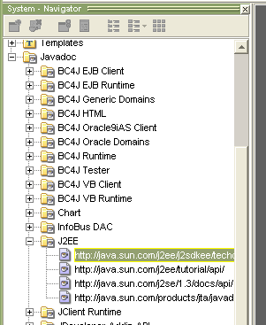

DocLinks adds a "Javadoc" node to the IDE navigator from which you can access the Javadoc of all libraries and JDKs available in the IDE.
On startup, you should see the Javadoc node in the JDeveloper navigator. If you expand this, you will see all library definitions and JDKs available in the IDE which have a doc path defined:

You can double click any entry to see the javadoc for that doclink.
For more info, please see JDeveloper's Online help
For more samples, please visit the Oracle Technology Network (OTN)